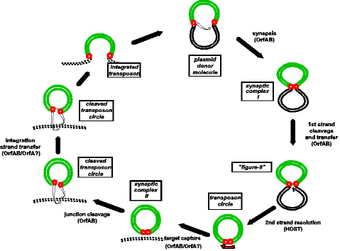

 |
The IS911 transposition cycle.
The transposon is shown in green, donor backbone sequences as black lines
and target DNA as black dotted lines. The small red unfilled circles represent
IRL or IRR. Transposition is initiated by the formation of a synaptic complex
mediated by the OrfAB transposase, hydrolysis (nucleophilic attack) at one
end of the IS and tranfer of the 3'OH generated to the partner end. This
results in a figure of eight structure which is formed by a single-strand
joint. The figure eight is subsequently resolved into a transposon circle
intermediate in a process that requires host enzymes. The transposon
circle then forms a second synaptic complex with a suitable target DNA leading
to subsequent integration. |